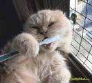

Здавалося б що особливий догляд потрібен лише котам які приймають участь у виставках адже їм потрібно завойовувати перші місця і призи. Однак за зви чайними домашніми улюбленцями особливо довгошерстих порід на зразок котів Мейкун чи Турецьких ангор потрібен елемента рний догляд, який передбачає регулярне розчісування та миття шерсті.
 Google